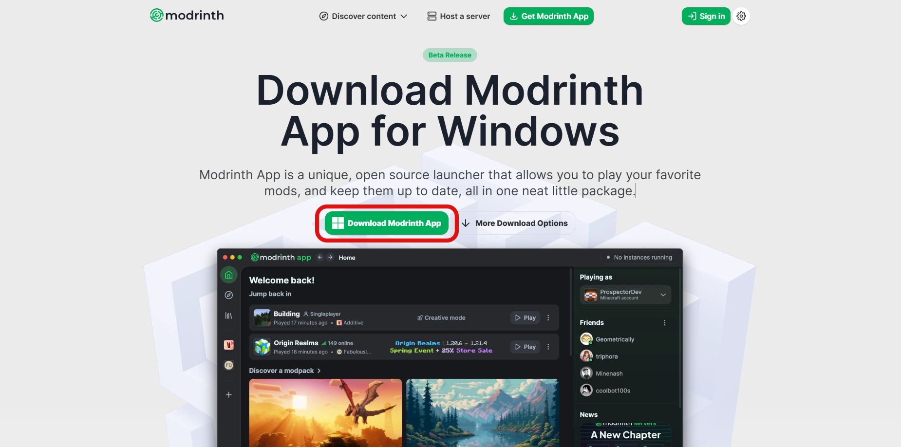
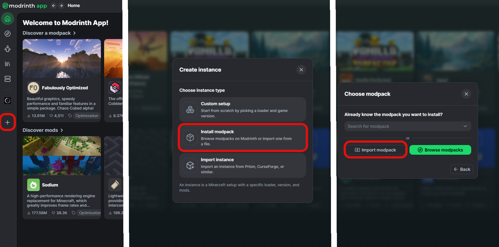
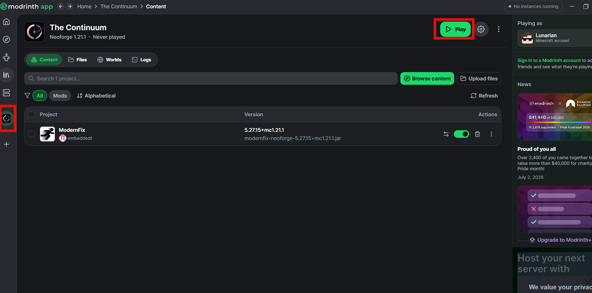

Installer Modrinth
Télécharger et installer le launcher Modrinth officiel.

L'installation prend quelques minutes.
Télécharger et installer le launcher Modrinth officiel.

Ouvrir Modrinth. Appuyer sur le bouton "+". Choisir Import from file. Séléctionner TheContinuum.mrpack.

Attendre que le téléchargement soit terminé. Appuyer sur "Play". Bon jeu !
